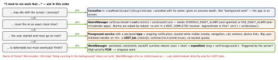

cross-platform · folio
In one line: Android runs your code in the background only on its terms: a coroutine dies with its owner, WorkManager guarantees deferrable work (persisted, survives reboot, runs when quota and constraints allow), a foreground service is visible work the user started, and AlarmManager is for a wall-clock moment. Every release since 6.0 (Doze) has narrowed the rest: standby-bucket quotas, background-start bans, typed and time-limited services.
Download PDF Print view LaTeX source


WorkManager internals
enqueuewrites aWorkSpecrow to WorkManager’s own Room DB, then schedules it withJobScheduler(and runs it in-process at once if constraints already hold). Reboot, update, force-stop: rows re-registered (boot receiver, next launch).- One run of a worker ≈ one job: the system stops it after 10 min (
CoroutineWorkeris cancelled, work is retried). Longer:setForeground()→SystemForegroundService— declare it in the manifest with your FGS type. - Numbers: backoff default EXPONENTIAL 30 s, min 10 s, max 5 h; periodic ≥ 15 min, flex ≥ 5 min;
Data≤ 10 KB — pass URIs/ids. enqueueUniqueWork(name, KEEP|REPLACE|APPEND|APPEND_OR_REPLACE, r)(periodic:KEEP/UPDATE).beginWith(listOf(a, b)).then(c): outputs merged by anInputMerger; a failed parent fails the chain.- Expedited:
setExpedited(RUN_AS_NON_EXPEDITED_WORK_REQUEST | DROP_WORK_REQUEST); quota by standby bucket, none while in foreground; below Android 12 it runs as an FGS viagetForegroundInfo()— missing it = crash.
Example — a resilient upload
@HiltWorker class UploadWorker @AssistedInject constructor(
@Assisted ctx: Context, @Assisted p: WorkerParameters, val api: Api
) : CoroutineWorker(ctx, p) {
override suspend fun doWork(): Result = try {
setForeground(info()) // may outlive 10 min
api.upload(inputData.getString("uri")!!); Result.success()
} catch (e: IOException) {
if (runAttemptCount < 5) Result.retry() else Result.failure() }
override suspend fun getForegroundInfo() = info() // expedited < 12
private fun info() = ForegroundInfo(42, notification(),
ServiceInfo.FOREGROUND_SERVICE_TYPE_DATA_SYNC) }
WorkManager.getInstance(ctx).enqueueUniqueWork("upload",
ExistingWorkPolicy.KEEP, OneTimeWorkRequestBuilder<UploadWorker>()
.setConstraints(Constraints.Builder()
.setRequiredNetworkType(NetworkType.UNMETERED).build())
.setInputData(workDataOf("uri" to uri)).build())Traps
- “WorkManager for a 30-min download the user tapped” — FGS or UIDT job.
- Tested on a plugged-in phone — force Doze and a
rarebucket. Thread/coroutine in aBroadcastReceiverorApplication— the process can be killed the moment no component is active.
Remember: dies with screen → coroutine · clock → alarm · visible now → typed FGS · must finish → WorkManager.
Foreground services — the rules by version
- 12+: no FGS start from the background →
ForegroundServiceStartNotAllowedException. Exemptions: high-priority FCM, exact alarm, notification/widget tap, someBOOT_COMPLETEDstarts,SYSTEM_ALERT_WINDOW(15+: only with a visible overlay). - 14+:
android:foregroundServiceType+FOREGROUND_SERVICE_<TYPE>permission, elseMissingForegroundServiceTypeException; declared in Play Console. Camera/mic/location types can’t start in background even when exempt.shortService: ∼3 min. - 15+:
dataSyncandmediaProcessingget 6 h per 24 h (each), thenService.onTimeout(int, int)— not stopped = crash; foreground resets it.BOOT_COMPLETEDmay not startdataSync,mediaPlayback,mediaProjection,phoneCall.
Doze & App Standby Buckets
Doze (unplugged, still, screen off): no network, wakelocks ignored, jobs/syncs/alarms wait for maintenance windows; …AllowWhileIdle alarms ≤ once per 9 min per app; high-priority FCM gets brief network. Buckets (usage, ML-predicted) cap work:
| Bucket | Regular jobs | Expedited | Alarms |
|---|---|---|---|
| Active | 20 min / 60 min | 30 min / 24 h | no limit |
| Working set | 10 min / 4 h | 15 min / 24 h | 10 / h |
| Frequent | 10 min / 12 h | 10 min / 24 h | 2 / h |
| Rare (no network) | 10 min / 24 h | 10 min / 24 h | 1 / h |
| Restricted (12+) | 1 run / day, 10 min | 5 min / 24 h | 1 / day |
16: jobs started while visible or running beside an FGS now count against the quota. Test: am set-standby-bucket <pkg> rare · dumpsys deviceidle force-idle.
Exact alarms & broadcasts
- 12: exact needs
SCHEDULE_EXACT_ALARM; 13: orUSE_EXACT_ALARM(auto-granted, not revocable, policy-limited); 14: the former is denied by default on new installs —canScheduleExactAlarms(). Inexactset(): within 1 h. - Manifest receivers get no implicit broadcasts (8.0+) bar a short list (
BOOT_COMPLETED, …).onReceiveruns on main, <10 s;goAsync()buys time, not a lifetime — hand off to WorkManager.